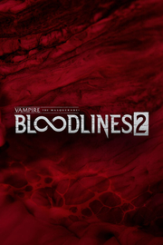

Vampire: The Masquerade - Bloodlines 2
Detalles
 |
|
| Tiempo de juego | No Jugado |
| Última actividad | Nunca |
| Añadido | 24/10/2025 19:49:56 |
| Modificado | 25/10/2025 2:17:02 |
| Estado de finalización | Not Played |
| Librería | Playnite |
| Fuente | 2TB DATOS |
| Plataforma | PC (Windows) |
| Fecha de lanzamiento | 21/10/2025 |
| Puntuación de la Comunidad | 56 |
| Puntuación de la Crítica | |
| Puntuación de usuario | |
| Género | Acción Rol |
| Desarrollador | The Chinese Room |
| Editor | Paradox Interactive |
| Característica | Cloud Saves Compat. Parcial Con Mando Cromos De Dificultad Ajustable Logros De Opciones De Subtítulos Préstamo Familiar Tamaño Del Texto Ajustable Un Jugador |
| Enlaces | Punto de encuentro Discusiones Guías Noticias Página de la tienda PCGamingWiki Logros |
| Tag | Acción Ambientales Aventura Buena trama Desnudos Fantasía oscura Las elecciones importan LGBTQ+ Mundo abierto Oscuros Políticos Primera persona Rol Sangre Sangriento Sigilo Terror Un jugador Vampiros Violentos |
Descripción
Eres una vampira ancestral que lucha para abrirse paso en la Seattle actual al borde de una guerra. Conoce a los que controlan todo, forma alianzas y decide quién gobierna y cómo será la ciudad.
Un asedio de tres frentes en Seattle, un vacío de poder en la corte vampírica y una vampira ancestral despertada en desacuerdo con la voz de su cabeza. Todo esto es obra del estudio premiado por los BAFTA, The Chinese Room.

La sangre te alimenta y da poder a tus disciplinas vampíricas. Acechas a la población de la ciudad y te alimentas de ella. Usa los poderes sobrenaturales o la persuasión con los civiles y atráelos hacia los callejones oscuros para saciar tu hambre. Pero ten cuidado de no romper la Mascarada. No reveles lo que eres o habrá represalias. Al principio de la ley y luego, bueno... recuerda que no eres la única criatura de la noche.
Explora un combate inmersivo y visceral que recompensa estilos de juego y enfoques diferentes según tu elección de clan. ¿Entrarás en combate con puños sobrenaturales, atacarás desde lejos o achicarás al rebaño desde lejos como la depredadora que eres? Las elecciones de clan admiten estos estilos de juego y más.

Adéntrate en el Mundo de Tinieblas y escala en la sociedad vampírica o rebélate contra ella. Descubre Seattle: una ciudad poblada por facciones y personajes carismáticos y peligrosos, además de los mortales inmersos en una lucha de poder que desconocen. En esta secuela del clásico de culto, tus decisiones, conspiraciones y estratagemas cambiarán el equilibrio de poder y el destino de la ciudad y su gente.